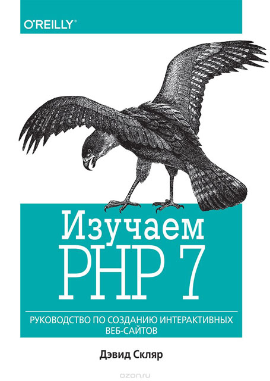
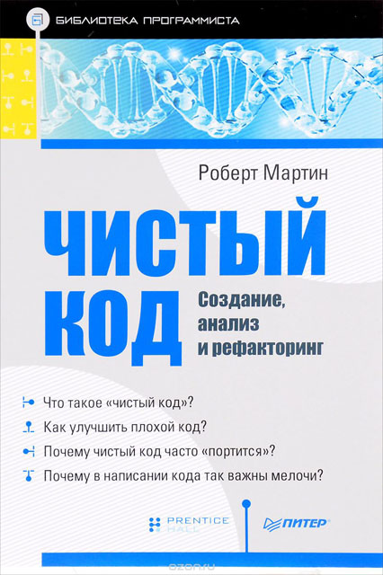

Підбірка книг для Back-End розробників
-
Для новачків
- «Вивчаємо PHP 7»
- «Чистий код»
- «Досконалий код»
Книги видавництва O'REILL легко дізнатися про характерну обкладинку із зображенням тварини. Вони випускають лише дуже якісну технічну літературу. Керівництво "Вивчаємо PHP 7" підійде тим, хто тільки починає вивчати мову. Воно дає не тільки вичерпну та актуальну інформацію з PHP, але й містить безліч хороших практик, огляд фреймворків та вправи, які допоможуть закріпити засвоєний матеріал.

Книга приділяє дуже велику увагу написанню якісного коду. Тут докладно розглядаються такі аспекти, про які ви могли навіть ніколи не замислюватися: як називати змінні та функції, тестувати свій код і робити його максимально простим для підтримки та розвитку. Усі приклади наводяться мовою Java.

-
Для профі
- «Шаблони корпоративних додатків»
- «Джоел про програмування»
Це класичний і далеко не простий для сприйняття працю. Усі приклади у книзі наводяться мовою Java. Рекомендую ознайомитись з нею через рік-два роботи з PHP. Вона допоможе вам покращити свої навички в проектуванні складних додатків, організації коду та розподілі його на окремі та незалежні модулі.
Керівництво від колишнього програміста Microsoft, одного із творців Stack Overflow, сподобається в першу чергу вже більш-менш досвідченим програмістам. По суті, у книжці зібрано багато окремих постів, які писав у свій блог Джоел Спольські. Він торкнувся багатьох різних аспектів створення програмного забезпечення: від пристрою робочого місця до кращих способів написання коду.